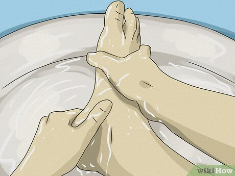

۔1
Chapter No 1
۔1
Chapter No 1
۔2
طہارت سے متعلق قرآنی آیات۔
فرمانِ خداوندی ہے۔۔۔
اِنَّ اللهَ یُحِبُّ التَّوَّابِیْنَ وَیُحِبُّ الْمُتَطَهِّرِیْنَ۔
ترجمہ: بے شک اللہ بہت توبہ کرنے والوں سے محبت فرماتا ہے اور خوب پاکیزگی اختیار کرنے والوں سے محبت فرماتا ہے۔
فرمانِ خداوندی ہے۔۔۔
لَا تَقُمْ فِیْهِ اَبَدًا ط لَمَسْجِدٌ اُسِّسَ عَلٰی التَّقْوٰی مِنْ اَوَّلِ
یَوْمٍ اَحَقُّ اَنْ تَقُوْمَ فِیْهِ ط فِیْهِ رِجَالٌ یُّحِبُّوْنَ اَنْ یَّتَطَهَرُوْا ط
وَاللهُ
یُحِبُّ الْمُطَّهِّرِیْنَ
ترجمہ: (اے حبیب!) آپ اس (مسجد کے نام پر بنائی گئی عمارت) میں کبھی بھی کھڑے نہ ہوں
البتہ وہ مسجد، جس کی بنیاد پہلے ہی دن سے تقویٰ پر رکھی گئی ہے، حقدار ہے کہ آپ اس میں قیام فرما ہوں۔
اس میں ایسے لوگ ہیں جو (ظاہراً وباطناً) پاک رہنے کو پسندکرتے ہیں، اور اللہ طہارت شعار لوگوں سے
محبت فرماتا ہے۔۔
فرمانِ خداوندی ہے۔۔۔
اِنَّهٗ لَقُرْاٰنٌ کَرِیْمٌ۔۔۔فِیْ کِتٰبٍ مَّکْنُوْنٍ۔۔۔لَّا یَمَسُّهٗٓ اِلَّا الْمُطَهَرُوْنَ۔
ترجمہ:بے شک یہ بڑی عظمت والا قرآن ہے (جو بڑی عظمت والے رسول ﷺ پر اتر رہا ہے)۔ (اِس سے پہلے یہ) لوحِ محفوظ میں (لکھا ہوا) ہے۔ اِس کو پاک (طہارت والے) لوگوں کے سوا کوئی نہیں چُھوئے گا۔
فرمانِ خداوندی ہے۔۔۔
یٰۤاَیُّہَا الۡمُدَّثِّرُ۔۔۔قُمۡ فَاَنۡذِرۡ۔۔۔وَ رَبَّکَ فَکَبِّرۡ۔۔۔وَ ثِیَابَکَ فَطَہِّرۡ۔
ترجمہ:اے چادر اوڑھنے والے (حبیب!)۔ اُٹھیں اور (لوگوں کو اللہ کا) ڈر سنائیں۔ اور اپنے رب کی بڑائی (اور عظمت) بیان فرمائیں۔ اور اپنے (ظاہر و باطن کے) لباس (پہلے کی طرح ہمیشہ) پاک رکھیں۔
3۔
طہارت سے متعلق احادیثِ رسولﷺ۔
حدیث
فرمانِ آخری نبیﷺ ہے۔۔۔
عَنْ أَبِي مَالِکٍ الْأَشْعَرِيِّ رضی الله عنه، قَالَ: قَالَ رَسُوْلُ اللهِ ﷺ:
اَلطُّهُوْرُ شَطْرُ الْإِیْمَانِ
رَوَاهُ مُسْلِمٌ وَأَحْمَدُ وَالدَّارِمِيُّ وَابْنُ أَبِي
شَیْبَۃَ وَالطَّبَرَانِيُّ۔
ترجمہ: حضرت ابو مالک اشعری رضی اللہ عنہ سے روایت ہے کہ۔۔۔ رسولُ اللہ ﷺ نے فرمایا ہے: طہارت (و پاکیزگی) نصف ایمان ہے۔
حدیث
سیدُ الانبیاء ﷺ کا فرمان ہے۔۔۔
عَنْ مُحَمَّدِ بْنِ الْحَنَفِیَّةِ، عَنْ أَبِیْهِ، قَالَ: قَالَ رَسُوْلُ اللهِ ﷺ:
مِفْتَاحُ الصَّلَاةِ الطُّهُوْرُ۔
رَوَاهُ أَحْمَدُ وَأَبُوْ دَاوُدَ وَالتِّرْمِذِيُّ وَابْنُ
مَاجَہ۔
ترجمہ:محمد بن الحنفیہ اپنے وا لدِ گرامی (حضرت علی کرم اللہ وجہہ ) سے روایت کرتے ہیں: اُنہوں نے بیان کیا کہ رسولُ اللہ ﷺ نے فرمایا ہے: نماز کی کنجی طہارت ہے۔
حدیث
فرمانِ مصطفیﷺ ہے۔۔۔
عَنْ مُصْعَبِ بْنِ سَعْدٍ قَالَ: دَخَلَ عَبْدُ اللهِ بْنُ عُمَرَ رضی الله عنهما
عَلَی ابْنِ عَامِرٍ یَعُوْدُهٗ وَهُوَ مَرِیْضٌ، فَقَالَ: أَلَا تَدْعُو اللهَ لِي، یَا ابْنَ عُمَرَ،
قَالَ: إِنِّي سَمِعْتُ رَسُوْلَ اللهِ ﷺ یَقُوْلُ: لَا تُقْبَلُ صَلَاةٌ بِغَیْرِ طُهُورٍ وَلَا
صَدَقَةٌ مِنْ غُلُولٍ۔
رَوَاهُ مُسْلِمٌ وَالتِّرْمِذِيُّ وَالطَّبَرَانِيُّ۔
ترجمہ:حضرتِ عبد اللہ بن عمر رضی اللہ عنہما نے فرمایا: میں نے رسولُ اللہ ﷺ سے سنا ہے کہ بغیر طہارت (پاکیزگی) کے کوئی نماز قبول نہیں ہوتی اور مال حرام سے کوئی صدقہ قبول نہیں ہوتا۔
4۔
حدیث
فرمانِ آخری نبیﷺ ہے۔۔۔
عَن أَبِي أُمَامَۃَ الْبَاهِلِيِّ رضی الله عنه قَالَ: سَمِعْتُ رَسُوْلَ اللهِ ﷺ
یَقُوْلُ: مَنْ أَوٰی إِلٰی فِرَاشِهٖ طَاهِرًا یَذْکُرُ اللهَ حَتّٰی یُدْرِکَهُ النُّعَاسُ لَمْ
یَنْقَلِبْ سَاعَةً مِنَ اللَّیْلِ یَسْأَلُ اللهَ شَیْئًا مِنْ خَیْرِ الدُّنْیَا وَالْآخِرَةِ
إِلَّا أَعْطَاهُ إِیَّاه۔
رَوَاهُ التِّرْمِذِيُّ وَالطَّبَرَانِيُّ۔
ترجمہ:حضرت ابو امامہ الباہلی رضی اللہ عنہ سے روایت ہے کہ میں نے رسول اللہ ﷺ کو فرماتے ہوئے سنا: جو شخص با وضو ہوکر اپنے بستر پر لیٹے اور نیند آنے تک ذکرِ الٰہی میں مشغول رہے وہ رات کی جس گھڑی میں بھی اللہ تعالیٰ سے دنیا و آخرت کی کسی بھلائی کا سوال کرے گا، اللہ تعالیٰ اسے ضرور عطا فرمائے گا۔
حدیث
سیدُ الانبیاء ﷺ کا فرمان ہے۔۔۔
عَنِ ابْنِ عُمَرَ رضی الله عنهما أَنَّ رَسُوْلَ اللهِ ﷺ قَالَ: مَنْ بَاتَ
طَاهِرًا بَاتَ فِي شِعَارِهٖ مَلَکٌ فَلَمْ یَسْتَیْقِظْ إِلَّا قَالَ الْمَلَکُ: اللّٰهُمَّ اغْفِرْ
لِعَبْدِکَ فُلَانٍ فَإِنَّهٗ بَاتَ طَاهِرًا۔
رَوَاهُ ابْنُ حِبَّانَ وَابْنُ الْمُبَارَکِ۔
ترجمہ:حضرت (عبداللہ) بن عمر رضی اللہ عنہما سے روایت ہے کہ رسول اللہ ﷺ نے فرمایا ہے: جس نے حالتِ طہارت میں رات گزاری تو اس کے بدن کے بالوں کے ساتھ متصل لباس میں ایک فرشتہ رات گزارتا ہے، وہ شخص جب بھی بیدار ہوتا ہے فرشتہ اس کے لیے دعا کرتا ہے کہ یااللہ! اپنے فلاں بندے کی بخشش فرما کہ اس نے طہارت کی حالت میں رات گزار ی ہے۔
۔5
ظاہری طہارت کی اقسام۔
ظاہری طہارت کی بنیادی دو قسمیں ہیں۔۔۔
ذاتی طہارت۔
ذاتی طہارت سے مراد اپنے جسم اور لباس وغیرہ کو صاف ستھرا رکھنا ہے۔۔۔اوراپنے جسم اور لباس کو صاف ستھرا رکھنا ہمیں بہت سی بیماریوں سے بچانے کے ساتھ ساتھ ہماری شخصیت کو پرکشش بناتا اور ہمارے اعتماد و وقار میں اضافہ کرتا ہے۔ اِس کے برعکس گندے لباس اورمیلے جسم کے حامل افراد کو نہ صرف حقارت کی نگاہ سے دیکھا جاتا اور لوگ اُن سے گھن کھاتے ہیں۔۔۔ بلکہ ایسے لوگوں میں خود اعتمادی کی کمی بھی پائی جاتی ہے۔جسم و لباس کے علاوہ اپنی سواری،موبائل فون، لیپ ٹاپ ،چپل، جرابیں، عمامہ،چادر،ٹوپی،رُومال،گھڑی،قلم،بیگ وغیرہ استعمالی اشیاء کو بھی صاف ستھرا رکھا جائے اور جن چیزوں کو دھونا ممکن ہو اُنہیں وقتِ مناسب پر دھویا جائے۔
ہاتھ پاؤں کے ناخن ہفتے میں ایک مرتبہ ضرور کاٹیں۔۔۔ ورنہ اُن میں میل جمع ہوتا اور جراثیم پرورش پاتے ہیں، جو کھانے کے ذریعے پیٹ میں جاکر مختلف بیماریوں مثلاً ڈائریا ، ہیضہ وغیرہ کا باعث بن سکتے ہیں۔۔۔اِس کے علاوہ دانتوں کی صفائی کا بھی خاص اہتمام رکھیں۔سنت کے مطابق مسواک کریں۔ کھانے کے بعد دانتوں میں خلال کرنے کا معمول بنائیں۔ کھانے سے پہلے اور کھانے کے بعد اچھی طرح ہاتھ دھوئیں، کانوں کی صفائی کا بھی مناسب اہتمام کریں۔۔۔ لیکن اِس کے لئے کسی نوکیلی چیز کا استعمال نقصان دہ ثابت ہوسکتا ہے۔
ماحول کی طہارت۔
ماحول کی صفائی سے مراد،اپنی ذات کے علاوہ اپنے اطراف میں موجود مختلف مقامات اور مختلف چیزوں کی طہارت ہے۔۔۔بالخصوص گھر کے کچن اور باتھ روم کی صفائی،بہتر یہ ہے کہ صفائی کا شیڈول بنالیں کہ کن چیزوں کی روزانہ ،کن کی ہفتہ وار اور کن کی ماہانہ صفائی کرنی ہے مثلاً فریج،پنکھوں اورانرجی سیورز کی صفائی مہینے میں ایک دفعہ،دروازوں الماریوں وغیرہ کی ہفتہ وار وغیرہ۔۔۔
اور گھر میں موجود انڈر ٹینک اور اووَر ٹینک کی صفائی بھی ہر مہینے بہت ضروری ہے۔۔۔کیونکہ صحت مند رہنے کے لئے صاف پانی کا استعمال نہایت اہمیت رکھتا ہے۔۔۔اور ماحول کی صفائی صرف اپنے گھر تک ہی محدود نہیں بلکہ اپنی گلی ، محلے،دفتر ،مسجد،عوامی سواری مثلاً بس، ٹرین وغیرہ کی صفائی بھی اِس میں شامل ہے۔ اپنے گھر کو صاف کرکے تمام کچرا گلی محلے میں ڈال دینا نیز اپنے صحن کو دھوکر گلی میں پانی کھڑا کردینا کہ پڑوسیوں اور گزرنے والوں کو تکلیف پہنچے، یقیناً یہ ایک ناپسندیدہ عمل ہے جو دوسروں کے لئے تکلیف کا باعث بھی بنتا ہے۔
خلاصہ یہ ہے کہ۔۔۔ہمیں اپنے جسم بالخصوص ہاتھوں،سراور داڑھی کے بالوں،دانتوں، لباس ، سواری ،چپل وغیرہ کی اوراپنے اطراف بالخصوص گھر، دفتر، سیڑھیوں، گلی، ملازمت کے مقام کی صفائی پر بھرپورتوجہ دینی چاہیے۔
6۔
طہارت کے شرعی مسائل کا علم سیکھنا فرض ہے۔
اسلامی تعلیمات کے مطابق ہر عاقل،بالغ،مسلمان،مرداور عورت پر طہارت کے درج ذیل موضوعات کا علم سیکھنا فرض ہے۔۔۔
نمبر1۔وضو کے شرعی مسائل۔
نمبر۔2۔غسل کے شرعی مسائل۔
نمبر۔3۔نجاستوں کے شرعی مسائل۔
نمبر۔4۔ناپاک چیزوں کو پاک کرنے کے شرعی مسائل۔
اسلام میں طہارت کی اہمیت سے متعلق مزید آرٹیکلز پڑھنے کے لئے نیچے دیئے گئے لنکز پر کلک کریں۔۔۔
۔7
Chapter No 2
۔8
وضو کی شرعی تعریف۔
وضوء کی تعریف: وضوء طہارت حاصل کرنے کا ایک عمل ہے، جو ہر مسلمان ،عاقل ،بالغ پر پانچ وقت کی نماز ، نمازِ جنازہ، سجدہِ تلاوت کی ادائیگی اور قرآن ِ کریم کو چھونے کے لئے لازم ہے۔
وضو کی اہمیت و فضیلت سے متعلق احادیث۔
حدیث
ابو ہریرہ رضی اللہ عنہ سے روایت ہے کہ۔۔۔ رسول ُاللہ ﷺ نے فرمایا: اللہ تعالی بے وضو کی نماز قبول نہیں کرتا ہے، یہاں تک کہ وہ وضو کر لے۔
(صحیح بخاری: کتاب الوضوء، صحيح مسلم: كتاب الطهارة)
حدیث
ابو ہریرہ رضی اللہ عنہ روایت کہتے ہیں کہ میں نے رسول ُاللہ ﷺ کو فرماتے ہوئے سنا ہے ،قیامت کے روز میری امت کے لوگ ایسی حالت میں آئیں گے کہ وضو کے اثرات کی وجہ سے اُن کے ہاتھ پاؤں چمکتے ہوں گے،تم میں سے جو شخص اِس چمک اور روشنی کو زیادہ بڑھا سکتا ہے اُسے ضرور بڑھانا چاہیئے۔
(صحیح بخاری : کتاب الوضو، صحیح مسلم: کتاب الطہارۃ)
حدیث
حضرت ابو امامہ الباہلی رضی اللہ عنہ سے روایت ہے کہ میں نے رسول اللہ ﷺ کو فرماتے ہوئے سنا: جو شخص با وضو ہوکر اپنے بستر پر لیٹے اور نیند آنے تک ذکرِ الٰہی میں مشغول رہے وہ رات کی جس گھڑی میں بھی اللہ تعالیٰ سے دنیا و آخرت کی کسی بھلائی کا سوال کرے گا، اللہ تعالیٰ اسے ضرور عطا فرمائے گا۔
(صحیح بخاری : کتاب الوضو، صحیح مسلم: کتاب الطہارۃ)
آیتِ قرآنی کی روشنی میں وضو کے فرائض۔
فرمانِ خداوندی ہے۔۔۔
یٰۤاَیُّهَا الَّذِیْنَ اٰمَنُوْۤا اِذَا قُمْتُمْ اِلَى الصَّلٰوةِ فَاغْسِلُوْا وُجُوْهَكُمْ وَ اَیْدِیَكُمْ اِلَى الْمَرَافِقِ وَ امْسَحُوْا بِرُءُوْسِكُمْ وَ اَرْجُلَكُمْ اِلَى الْكَعْبَیْنِ۔
۔9
ترجمہ :یعنی اے ایمان والو ،جب تم نماز پڑھنے کا ارادہ کرو (اور وضو نہ ہو) تو اپنے مونھ اور کُہنیوں تک ہاتھوں کو دھوؤ اور سروں کا مسح کرو اور ٹخنوں تک پاؤں دھوو۔
(پ۶، سورہِ مائدہ: ۶ )بحوالہ۔۔۔
مذکورہ آیت سے معلوم ہوا کہ وضو کے چار فرائض ہیں۔
نمبر1۔چہرہ دھونا۔
نمبر۔2۔کہنیوں سمیت دونوں ہاتھ دھونا۔
۔10
نمبر۔3۔چوتھائی سر کا مسح کرنا۔
نمبر۔4۔ٹخنوں سمیت دونوں پاوں دھونا۔
دھونے کی تعریف۔
شریعت کی نظر میں بدن کے جِس حصے کو دھویا جارہا ہے اُس کے تمام بالوں پر سے کم از کم دو قطرے پانی کے بہانا دھونا کہلاتا ہے۔
مسح کی تعریف۔
شریعت کی نظر میں جسم کے بغیر دھلے حصے پر پانی پہنچانے کو مسح کہتے ہیں۔
۔11
چہرہ دھونے سے متعلق شرعی مسائل۔
جہاں سے عمومی طور پر یشانی کےبال نکلنا شروع ہوتے ہیں وہاں سے لے کر تھوڑی کے نیچے تک اور ایک کان کی لو سے دوسرے کان کی لو تک جو حصہ ہے اُسے چہرہ کہتے ہیں۔
مسئلہ 1)۔ مونچھوں اور آئی بُروز کے بال گھنے ہوں یعنی اُن کے نیچے کی جِلد باِلکل نہ دِکھائی دیتی ہو تو جِلد کا دھونا فرض نہیں بالوں کا دھونا فرض ہے اور اگر اُن کے بال گھنے نہ ہوں تو جِلد کا دھونا بھی فرض ہے۔
مسئلہ 2)۔ اگر مونچھ کے بال بڑھ کر ہونٹوں کو چھپالیں تو اگرچہ گھنے ہوں ،اُن بالوں کو ہَٹا کر ہونٹ کو دھونا فرض ہے۔
مسئلہ 3)۔ داڑھی کے بال اگر گھنے نہ ہوں تو جلد کا دھونا فرض ہے اور اگر گھنے ہوں تو گلے کی طرف دبانے سے جِتنے بال چہرے کے دائرے میں آئیں اُن کے ظاہری حصے کو دھونا فرض ہے ،اُن کی جڑوں کا دھونا فرض نہیں ہے۔
مسئلہ4)۔وضو میں آنکھوں کے اندرونی حصے کو دھونا فرض نہیں ہے ۔
ہاتھ دھونے سے متعلق مسائل۔
مسئلہ 1)۔ ہاتھوں کو دھونے میں کہنیاں بھی شامل ہیں لھذا اگر کُہنیوں سے ناخن تک کوئی جگہ ذَرّہ برابر بھی دھلنے سے رہ جائے گی تو وُضو نہیں ہو گا۔
مسئلہ2)۔ہاتھوں میں پہنے جانے والے زیورات یعنی انگھوٹی وغیرہ اگر اِتنے تنگ ہوں کہ بغیر اتارے اُن کے نیچے پانی نہ بَہے گا تواُن کو اُتار کر دھونا فرض ہے اور اگرصرف ہِلا کر دھونے سے پانی بہ جاتا ہو تو اُنہیں حرکت دینا ضرور ی ہے اور اگر ڈِھیلے ہوں کہ بے ہلائے بھی نیچے پانی بہ جائے گا تو اُتارنا اور حرکت دینا کچھ ضرور ی نہیں ہے ۔
سر کے مسح سے متعلق مسائل۔
مسئلہ 1)۔ مسح کرنے کے لیے ہاتھ تَر ہونا چاہیئے، چاہے ہاتھ میں تَری کسی عضو کو دھونے کے بعد رہ گئی ہو یا نئے پانی سے ہاتھ تر کیا ہو۔
مسئلہ3)۔ عمامے، ٹوپی، دُوپٹے پر مسح کافی نہیں ہے ،ہاں اگر ٹوپی یا دُوپٹا اتنا باریک ہو کہ تَری پُھوٹ کر چوتھائی سر کو تَر کردے تو مسح ہو جائے گا۔
مسئلہ4)۔ سر سے جو بال لٹک رہے ہوں اُن پر مسح کرنے سے مسح نہیں ہوگا۔
۔12
پاؤں دھونے سے متعلق مسائل۔
مسئلہ1)۔ پاؤں کو دھونے کے معاملے میں بہت احتیاط کی حاجت ہے ، لھذا اگر پاؤں کو دھوتے وقت انگلیوں کے درمیان کی یا پاؤں کےتلے کی کوئی جگہ خشک رہ جائے تو وضو نہیں ہوگا۔
وضو کی سنتیں۔
وضو کی تمام سنتیں مؤکدہ ہیں، جِن کو بلاعذر چھوڑنے کی اجازت نہیں ہے، اور اگر کوئی بغیر کسی عذر اور توبہ کے تین بار وضو کی کوئی سنت چھوڑے گا تو وہ عذاب کا مستحق ہوگا۔
وضو کی مندرجہ ذیل سنتیں ہیں۔
نمبر1)۔ پاکی حاصل کرنے کی نیت کرنا۔
نمبر2)۔بسم اللہ پڑھنا۔
نمبر3)۔گِٹوں تک تین بار دونوں ہاتھ دھونا۔
نمبر4)۔مسواک کرنا
نمبر5)۔سیدھے ہاتھ سے تین بار اچھی طرح کُلی کرنا۔
نمبر6)۔روزہ نہ ہو تو غرغرہ کرنا۔
نمبر7)۔سیدھے ہاتھ سے تین بار ناک کی نرم ہڈی تک پانی پہنچانا۔
نمبر8)۔ہاتھ ،پاؤں کی انگلیوں کا خِلال کرنا۔
نمبر9)۔داڈھی کا خِلال کرنا۔
نمبر10)۔پورے سر کا ایک بار مسح کرنا۔
نمبر11)۔دونوں کانوں کا مسح کرنا۔
نمبر12)۔وضو کے فرائض میں ترتیب قائم رکھنا، یعنی پہلے چہرہ ،پھر کہنیوں سمیت دونوں ہاتھ دھونا ،پھر سر کا مسح کرنا ،اور پھر دونوں پاؤں دھونا۔
۔13
نمبر13)۔ پے درپے وضو کے اعضاء دھونا،یعنی ایک عضو سوکھے نہیں کہ فورا دوسرا عضو دھولینا۔
نمبر14)۔وضو کے اعضاء کو دھوتے وقت ملنا۔
وضو توڑنے والی چیزیں
درج ذیل چیزیں وضو کو توڑ دیتی ہیں۔
نمبر1)۔ سبیلین سے کسی نجاست کا نکلنا چاہے وہ نجاست بہے یا نہ بہے۔لھذا اگر نجاست کا ایک قطرہ بھی سبیلین سے خارج ہوا تو وضو ٹوٹ جائے گا۔
نوٹ: سبیلین سے مراد انسان کےجسم میں موجود وہ دو راستے ہیں کہ جن سے عادۃً نجاست خارج ہوتی ہے۔
نمبر2)۔ سبیلین کے علاوہ جسم کی کسی حصے سے بہنے کی مقدار میں نجاست کا نکل کر کسی ایسی جگہ پر آجانا کہ جِس کو وضو یا غسل میں دھونا فرض ہے۔
نمبر3)۔ریح کا خارج ہونا۔
نمبر4)۔دُکھتی آنکھ سے نکلنے والا پانی۔
نمبر5)۔منہ بھر اُلٹی ۔منہ بھر اُلٹی اُس اُلٹی کو کہتے ہیں کہ جِس کو بغیر مشقت کے روکا نہ جاسکے۔
نمبر6)۔منہ سے نکلنے والا ایسا خون کہ جو تھوک سے زیادہ یا اُس کے برابر ہو۔
نوٹ: اگر تھوک کا رنگ لال یا اورنج ہوتو خون زیادہ اور برابر سمجھا جائے گا اور وضو ٹوٹ جائے گا،لیکن اگر تھوک کا رنگ پیلا ہو تو تھوک زیادہ سمجھا جائے گا اور وضو نہیں ٹوٹے گا۔
نمبر7)۔ایسی حالت پر سو جانا کہ جِس کی وجہ سے جسم کے جوڑ ڈھیلے پڑ جائیں۔
نمبر8)۔بیہوشی۔
نمبر9)۔اِیسا نشہ کہ جِس کی وجہ سے چلتے ہوئے پاؤں زمین پر صحیح نہ جم سکیں۔
۔14
وضو کا سنت طریقہ
وضو کرنے والے کو چاہیے کہ اپنے دل میں وضو کا پختہ ارادہ کرکے قبلہ کی طرف منہ کرے اور کسی اونچی جگہ بیٹھے اور بسم اﷲالرحمٰن الرحیم پڑھ کر پہلے دونوں ہاتھ تین مرتبہ گِٹوں تک دھوئے۔ پھر مسواک کرے۔ اگر مسواک نہ ہو تو انگلی سے اپنے دانتوں اور مسوڑھوں کو مل کر صاف کرے۔ اور اگر دانتوں یا تالو میں کوئی چیز چُپکی ہو تو اُس کو انگلی یا مسواک یا خلال سے نکالے اور چھڑائے۔ پھر تین مرتبہ کلی کرے۔ اور اگر روزہ دار نہ ہو تو غرغرہ بھی کرے لیکن اگر روزہ دار ہو تو غرغرہ نہ کرے کہ حلق کے اندر پانی چلے جانے کا خطرہ ہے پھر داہنے ہاتھ سے تین دفعہ ناک میں پانی چڑھائے اور بائیں ہاتھ سے ناک صاف کرے پھر دونوں ہاتھوں میں پانی لے کر تین مرتبہ اس طرح چہرہ دھوئے کہ ماتھے پر بال جمنے کی جگہ سے لے کر ٹھوڑی کے نیچے تک اور سیدھے کان کی لو سے اُلٹی کان کی لو تک سب جگہ پانی بہ جائے اور کہیں ذرا بھی پانی بہنے سے نہ رہ جائے۔ اگر داڑھی ہو تو اُسے بھی دھوئے اور داڑھی میں انگلیوں سے خلال بھی کرے لیکن اگر احرام باندھے ہو تو خلال نہ کرے پھر تین مرتبہ کہنی سمیت یعنی کہنی سے کچھ اوپر سیدھاہاتھ دھوئے پھر اِسی طرح تین مرتبہ اُلٹا ہاتھ دھوئے اگر انگلی میں تنگ انگوٹھی یا چھلہ ہو تو اُن کو ہلا کر دھوئے تاکہ سب جگہ پانی بہ جائے پھر ایک بار پورے سر کا مسح کرے ،اِس کا طریقہ یہ ہے کہ دونوں ہاتھوں کو پانی سے تر کرکے انگوٹھے اور کلمہ کی انگلی چھوڑ کر دونوں ہاتھوں کی تین تین انگلیوں کی نوک کو ایک دوسرے سے ملائے اور ان انگلیوں کو اپنے ماتھے پر رکھ کر پیچھے کی طرف سر کے آخری حصہ تک لے جائے۔ اس طرح کہ کلمہ کی دونوں انگلیاں اور دونوں انگوٹھے اور دونوں ہتھیلیاں سر سے نہ لگنے پائیں۔ پھر سر کے پچھلے حصہ سے ہاتھ ماتھے کی طرف اس طرح لائے کہ دونوں ہتھیلیاں سر کے دائیں بائیں حصہ پر ہوتی ہوئی ماتھے تک واپس آجائیں۔ پھر کلمہ کی انگلی کے پیٹ سے کانوں کے اندر کے حصوں کا اور انگوٹھے کے پیٹ سے کان کے اوپر کا مسح کرے اور انگلیوں کی پیٹھ سے گردن کا مسح کرے۔ پھر تین بار داہنا پاؤں ٹخنے سمیت یعنی ٹخنے سے کچھ اوپر تک دھوئے پھر بایاں پاؤں اسی طرح تین دفعہ دھوئے پھر بائیں ہاتھ کی چھنگلیا سے دونوں پیروں کی انگلیوں کا اس طرح خلال کرے کہ پیر کی داہنی چھنگلیا سے شروع کرے اور بائیں چھنگلیا پر ختم کرے۔ وضو کر لینے کے بعد ایک مرتبہ یہ دعا پڑھے۔
(اَللّٰھُمَّ اجْعَلْنِیْ مِنَ الَتَّوَّابِیْنَ وَاجْعَلْنِیْ مِنَ الْمُتَطَھِّرِیْنَ)
۔15
Chapter No 3
۔16
فرمانِ باری تعالی ہے۔
وَ اِنۡ کُنۡتُمْ جُنُبًا فَاطَّہَّرُوۡا
(پ۶، سورہِ مائدہ: ۶ )بحوالہ۔۔۔
ترجمہ: اگرتم بے غسلے ہو تو خوب پاکی حاصل کرو۔
حدیث
اللہ کے نبیﷺ کا فرمان ہے۔
ہر بال کے نیچے بے غسلہ پن ہوتا ہے ،تو بال دھوؤ اور جِلد کو صاف کرو۔
بحوالہ: سننِ أبي داود، کتاب الطھارۃ، الحدیث: ۲۴۸، ج۱
حدیث
رسولِ اکرم ﷺ کا فرمان ہے۔
جو شخص فرض غسل کرتے وقت ایک بال کی جگہ دھونے سے چھوڑ دے گا تو اُسے آگ کا عذاب دیا جائے گا۔
بحوالہ: سننِ أبي داود، کتاب الطھارۃ، الحدیث: ۲۴۹، ج۱
غسل کے فرائض
غسل کے تین فرائض ہیں جو کہ درج ذیل ہیں۔
۔17
نمبر1۔اچھی طرح کلی کرنا۔
شرعی مسئلہ: ہونٹ سے لے کر حلق تک منہ کے ہر حصے میں اچھی طرح پانی پہنچانے کو کلی کہتے ہیں۔اگرزبان کی جڑ اور حَلْق کے کنارے تک پانی نہ پہنچے تو۔۔۔
اِس طرح کرنے سے نہ غسل ہو گا، اور نہ اِس طرح غسل کے بعد نماز جائز ہوگی۔
شرعی مسئلہ: دانتوں کے درمیان اگر کوئی ایسی چیز ہو کہ جو پانی کو بہنے سے روکے ،اور اُسے نکالنے میں تکلیف اور حرج نہ ہو تو اُس چیز کو نکالنا ضروری ہے۔۔۔
جیسے چھالیا کے دانے، گوشت کے ریشے اور اگر اُس چیز کو نکالنے میں تکلیف اور حَرَج ہو تو معاف ہے۔
نمبر2۔اچھی طرح ناک میں پانی چڑھانا۔
شرعی مسئلہ: فرض غسل کرتے وقت ناک کی نرم ہڈی تک ناک کے بالوں کو دھونا بھی ضروری ہے۔
۔18
نمبر3۔اچھی طرح ظاہری جسم پر پانی بہانا۔
شرعی مسئلہ: اگر غسل فرض ہوجائے تو سر سے لے کر پاوٗں تک پورے ظاہری جسم کے تمام بالوں پر احتیاط کے ساتھ پانی بہانا لازم ہے۔
شرعی مسئلہ: اگر کسی زخم پر ایسی پٹی بندھی ہو کہ اُس پٹی کو کھولنے میں یا زخم پر پانی بہانے میں تکلیف اور نقصان کا اندیشہ ہو تو پٹی پر مسح کافی ہے۔
شرعی مسئلہ: اگر کسی بیماری کی وجہ سے سر پر پانی بہانا نقصان کا سبب بن سکتا ہے، تو غسل کے دوران صرف کلی کرے، ناک میں پانی ڈالے اور گردن سے نہالے اور پورے سر پر گھیلا ہاتھ
پھیر لیا جائے،غسل ہوجائے گا۔۔۔لیکن بیماری دور ہونے کے بعد سر کو دھونا لازم ہوگا۔
۔19
غسل کے سنتیں
غسل کی سنتیں درج ذیل ہیں۔۔۔
نمبر۔۔۔1)غسل کرنے سے پہلے طہارت حاصل کرنے کی نیت کرنا۔
نمبر۔۔۔2)دونوں ہاتھوں کو تین بار گٹوں تک دھونا۔
نمبر۔۔۔3)استنجے کی جگہ کودھوناچاہے اُس پرنَجاست ہو یا نہ ہو ۔
نمبر۔۔۔4)پھر بدن پر جہاں کہیں نَجاست لگی ہو اُس کو دور کرنا۔
نمبر۔۔۔5)نماز کی طرح مکمل وضو کرنا۔
نمبر۔۔۔6)پورے جسم پر تیل کی طرح پانی کو ملنا۔
نمبر۔۔۔7)تین بار سیدھے کندھے پر پانی بہانا۔
نمبر۔۔۔8)تین بار الٹے کندھے پر پانی بہانا۔
نمبر۔۔۔9)تین بار پورے جسم پر پانی بہانا۔
نمبر۔۔۔10)دورانِ غسل جسم پر ہاتھ ملنا۔
۔20
غسل فرض کرنے والے اسباب
غسل کو فرض کرنے والے اسباب درج ذیل ہیں۔
نمبر۔۔۔1)جاگتے ہوئے ،شہوت کے ساتھ غسل فرض کرنے والی نجاست کا جسم سے نکل جانا۔
نمبر۔۔۔2)احتلام کا ہونا،یعنی سوتے ہوئے غسل فرض کرنے والی نجاست کا جسم سے نکل جانا۔
نمبر۔۔۔3)میاں،بیوی کا جسمانی تعلق قائم کرنا،اِس صورت میں دونوں پر غسل فرض ہوگا۔
غسل کا سنت طریقہ
غسل کرنے والا شخص سب سے پہلے دل میں طہارت حاصل کرنے کی نیت کرے پھر غسل خانے سے باہر رہتے ہوئے بسم اللہ پڑھے اور اگر غسل خانے میں جانے کی دعا پڑھے پھر غسل کا آغاز کرتے ہوئے دونوں ہاتھ گٹوں تک دھوئےپھر استنجے کی جگہ کو دھوئے چاہے اُس پر نجاست لگی ہو یا نہ ہوپھر اگر جسم پر کہیں نجاست لگی ہو تو اُس کو دھوئے پھر نماز کی طرح مکمل وضو کرے پھر پورے جسم پر تیل کی طرح پانی کو مَلے پھر پہلے سیدھے کندھے پر تین بار پانی ڈالے اور پھر الٹے کندھے پر تین بار پھر آخر میں سر سے پاوٗں تک پورے جسم پر اچھی طرح تین بار پانی بہائےتاکہ کوئی جگہ خشک نہ رہ جائے ورنہ ٖغسل نہ ہوگا۔
۔21
غسل کے سنتیں
غسل کی سنتیں درج ذیل ہیں۔۔۔
نمبر۔۔۔1)غسل کرنے سے پہلے طہارت حاصل کرنے کی نیت کرنا۔
نمبر۔۔۔2)دونوں ہاتھوں کو تین بار گٹوں تک دھونا۔
نمبر۔۔۔3)استنجے کی جگہ کودھوناچاہے اُس پرنَجاست ہو یا نہ ہو ۔
نمبر۔۔۔4)پھر بدن پر جہاں کہیں نَجاست لگی ہو اُس کو دور کرنا۔
نمبر۔۔۔5)نماز کی طرح مکمل وضو کرنا۔
نمبر۔۔۔6)پورے جسم پر تیل کی طرح پانی کو ملنا۔
نمبر۔۔۔7)تین بار سیدھے کندھے پر پانی بہانا۔
نمبر۔۔۔8)تین بار الٹے کندھے پر پانی بہانا۔
نمبر۔۔۔9)تین بار پورے جسم پر پانی بہانا۔
نمبر۔۔۔10)دورانِ غسل جسم پر ہاتھ ملنا۔
۔22
غسل کے سنتیں
غسل کی سنتیں درج ذیل ہیں۔۔۔
نمبر۔۔۔1)غسل کرنے سے پہلے طہارت حاصل کرنے کی نیت کرنا۔
نمبر۔۔۔2)دونوں ہاتھوں کو تین بار گٹوں تک دھونا۔
نمبر۔۔۔3)استنجے کی جگہ کودھوناچاہے اُس پرنَجاست ہو یا نہ ہو ۔
نمبر۔۔۔4)پھر بدن پر جہاں کہیں نَجاست لگی ہو اُس کو دور کرنا۔
نمبر۔۔۔5)نماز کی طرح مکمل وضو کرنا۔
نمبر۔۔۔6)پورے جسم پر تیل کی طرح پانی کو ملنا۔
نمبر۔۔۔7)تین بار سیدھے کندھے پر پانی بہانا۔
نمبر۔۔۔8)تین بار الٹے کندھے پر پانی بہانا۔
نمبر۔۔۔9)تین بار پورے جسم پر پانی بہانا۔
نمبر۔۔۔10)دورانِ غسل جسم پر ہاتھ ملنا۔
۔23
غسل کے سنتیں
غسل کی سنتیں درج ذیل ہیں۔۔۔
نمبر۔۔۔1)غسل کرنے سے پہلے طہارت حاصل کرنے کی نیت کرنا۔
نمبر۔۔۔2)دونوں ہاتھوں کو تین بار گٹوں تک دھونا۔
نمبر۔۔۔3)استنجے کی جگہ کودھوناچاہے اُس پرنَجاست ہو یا نہ ہو ۔
نمبر۔۔۔4)پھر بدن پر جہاں کہیں نَجاست لگی ہو اُس کو دور کرنا۔
نمبر۔۔۔5)نماز کی طرح مکمل وضو کرنا۔
نمبر۔۔۔6)پورے جسم پر تیل کی طرح پانی کو ملنا۔
نمبر۔۔۔7)تین بار سیدھے کندھے پر پانی بہانا۔
نمبر۔۔۔8)تین بار الٹے کندھے پر پانی بہانا۔
نمبر۔۔۔9)تین بار پورے جسم پر پانی بہانا۔
نمبر۔۔۔10)دورانِ غسل جسم پر ہاتھ ملنا۔
۔
غسل فرض کرنے والے اسباب
غسل کا سنت طریقہ